യാക്കോബിനന്െറ മിസ്രയീം യാത്ര
വൃത്തം -- മോഹിനി
പിറോട്ടിനം പ്രഭാതത്തില് -- സൂര്യന്
മുററു മുദിപ്പതിന് മുന്പില്
ഇസ്രയേല് നിദ്രയ്യണര്ന്നു -- വേഗം
മിസ്രയാത്ര്ക്കു മുതിര്ന്നു.
മക്കളെയെല്ലാം വിളിച്ചു -- യാത്ര -
ഇലാക്കമവര്ക്കുമുദിച്ചു
ചൊന്നിതു സൃഭദ്ധജനകന് -- പര-
മോന്നതഭക്തി വിവശന്:
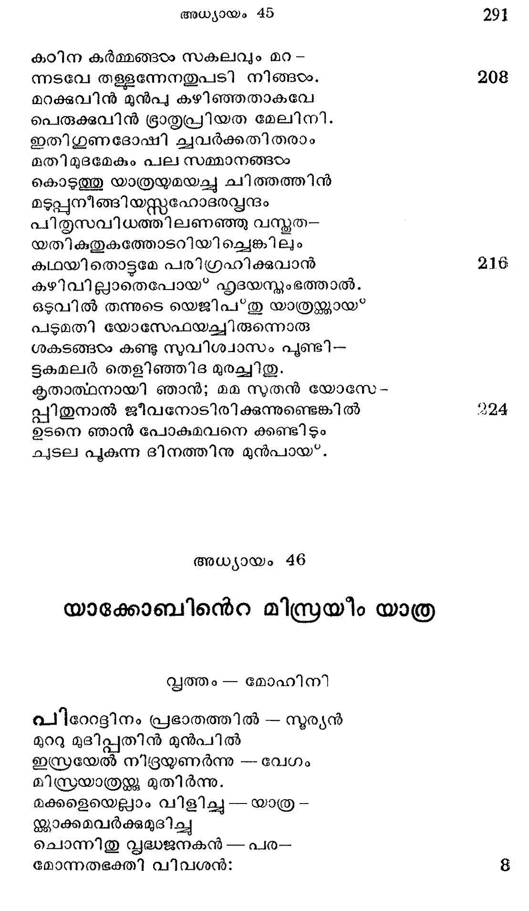
മാമകരായ സുതരേ !-- നമ്മ--
ളീമരുഭൂമിയില്നിന്നു
ക്ഷാമപരിഹാരമാറ്്റം--നോക്കി--
പ്പോകുന്നു മിസ്രയിം നാട്ടില്.
മാത്രവുമല്ിതിലേററം---മോദ-
മാത്തനാമെന് ഹൃദയത്തില്
ലബ്ദമായ* യോസേപ്പിന് വാത്മ--- കേട്ടി --
ട്ടിത്തവിലായവന്തന്നെ
ചെന്നു കണ്ടീടണമെന്നു -- വാഞ്ചര--
യൊന്നുദിക്കുന്നു മനസ്സില്.
നന്മയ്ളവാകും മാററം൦--ചെയ*കില്
നമ്മഠംക്കിയലില്ല കുററം.
കാലാനുകൂലം ക്രിയകം --ചെയ്യും
കാലാരിയമെന്നു കോടംപ്പൂ.
താതന് പിതാമഹന് താനും ---തക്ക
കാരണമുണ്ടാക മുലം
ചെന്നു കുടിപാര്ത്തു മിസ്ര --നാട്ടി--
ലെന്നറിവുണ്ടുമേ മുന്നം.
ഇന്നി തിലെല്പാമിരുന്നാലും - സ്വശ്-
മന്നവന് തന്െറ നിദേശം
കൂടാതെ മിസ്രന്ക്കു പോവ - തൊരു
കേടെന്നു ഞാന് നിനയ്ക്കുന്നു.
എങ്കിലുമാകട്ടെ, പോകാം-- ചെന്നു
തങ്കിടാം ബേര്ശേബ തന്നിൽ
തന്കഴല് കൂപ്പിടുന്നോര്ക്കു --വഴി
വെണ്കലാവെട്ടമാക്കീടും
പങ്കാപഹനായ ടദടൈവം-- മമ
ശങ്കാപരി ഹാരം ചെയ്യും
എന്നു പറഞ്ഞു പഴയ---വ്ന്രം
വെണ്നരയന് വിഴുത്തേററം
മിന്നുന്ന നല്ലട ചാര്ത്തി-- ശീര്ഷ-
മരരേണ്ണപടത്തിനാര് മൂടി
ഭംഗി യേറുമരക്കെട്ടാല്--- കടി
ഭംഗമകുന്നു മുറുക്കി
കാന്തി കുറഞ്ഞ വിധുവി-- ന്നൊത്ത
ക്ലാന്തമാം പാദയുഗത്തില്
ചെന്തളിര്പോലെ ചുകന്ന--- ബഹു-
ചന്തമാം പാടുക ചേര്ത്തു.
നാലരികിങ്കലും ചിത്ര --ത്തയ്യല്
വേലചെയ്യേറാം ലസിച്ചും
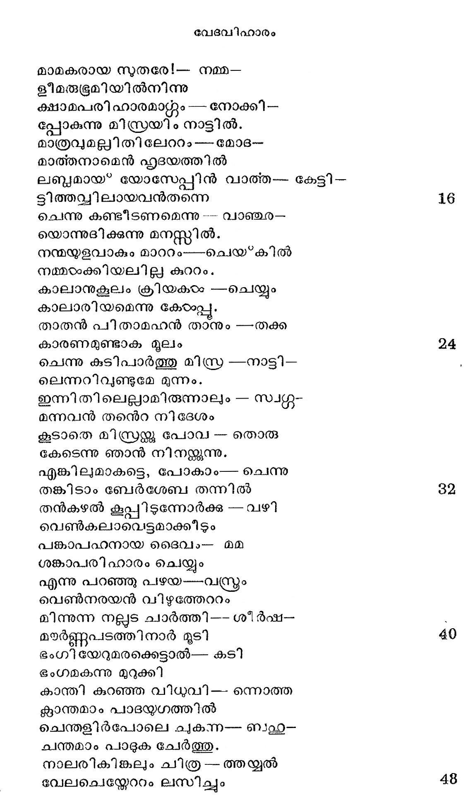
ബാലാനിലന് തട്ടന്നേര൦ം-- തുള്ളം
ചേലാം പൊടിപ്പുകളാര്ന്നും
ശക്രധനുസ്തറിന് ദ്ൃതികഠം ---ചിന്നും
പുഷ്കര സാമ്യം വഹിച്ച
നീലമാം പ്രാവാരമൊന്നു.__ തനു
മേലപിധാനമായേന്തി.
ഏററം മൂദിമയാര്ന്നുള്ള--- മഞ്ഞ
പ്പടടുലേസാല് ശിരോവ്ന്്രം
കെട്ടിയ്യറപ്പിച്ചു നഷ്ട --.- ഭൂത
ളിഷ്ട ഹൃദയനാം സ്ൃദ്ധന്
മുഷ്മിയിലംഗീകരിച്ചാ -- നൊരു
ത്വിട്ടെഴം യഷ്മിയം ശിഷ്യന്.
ഈദൂശവേഷം ധരിച്ചു --ജഗ
ഭീശപദാര്ച്ചന ചെയ്ത.
മെല്ലെ നടന്നു ശകട-- രത്ന
ക്കല്ല കിടക്കുമിടത്തു
ഭക്തമണിയത്ര നിന്ന-- നേരം
ഭൂത്യരാം രണ്ടുപേര് വന്നു
സാദരം സൃദ്ധനെത്താങ്ങി -- രഥ
വാതിലിനുള്ളില് കടത്തി
സപ്യതി സംഖ്യയെഴുന്ന -- തദീ-
യോത്തമ സന്താനസംഘം
സത്വരം മററു രഥങ്ങാം -- ക്കള്ളി --
ലൊത്തഭിവേശിച്ച പ്രീത്യാ.
ആരുമൊരുവരും നിലാ ---തെലാ-
പേരും കരേറീ രഥത്തില്.
ഭര്ത്തൃുഗണം ഭാര്യമാരും --പുത്ര--
പ്ൌത്രന്മാരും സ*൯ുഷമാരും
ശ്വശ്രൂ ശശുരരരും യാതാ - ക്കള--
മശ്രമം മാതുലന്മാരും
ജ്യേഷ്ഷാനുജഗണം സ്യാല -- ന്മാരോ-
ടിഷ്ട ദുഹിതാക്കഠം പിന്നെ
മാതാപിതാക്കന്മാരെന്ന --ല്ലേേതു -
ജ്ഞാതിയ്യം യാത്ര തിരിച്ചു.
പെട്ടികഠം മേശകടം കട്ടിൽ-- ശിശു-
ത്തൊട്ി ലരിയിടും പുട്ടില്
മുടി വിറകിതിയുട്ടില്---പല
ലൊട്ടുലൊടുക്കുകരം കൂട്ടി.
ചട്ടി കലം മരക്കൊട്ട --- ചെമ്പ
കുട്ടകം ലോട്ടകഠം കുട്ട
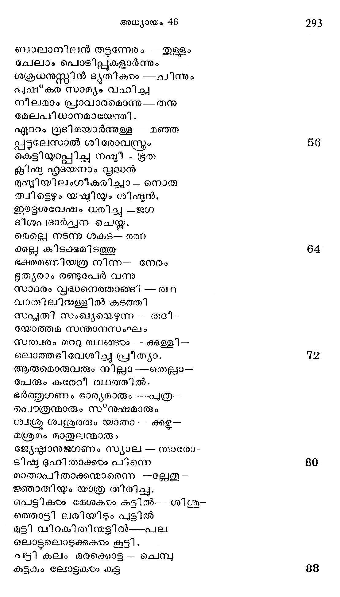
ചട്ടുകം വട്ടികളൊട്ട ല്ലെല്ലാ-
ചട്ടുകം ചട്ടന്നെടുത്തു,
അട്ടിയടുക്കി ശകട --ത്തിന്െറ
തട്ടതകരുമെന്നാരും
തിട്ടമായോര്ത്തിടും മട്ടി - ലവ
കെട്ടിവച്ചൊട്ട നിയോജ്യര്.
ആടുകളാകെ നടന്നു -- ബഹാ
മോടിയോടായതിന് പിന്പില്
മാഴുകളം വി ചരിച്ചു -- നിജ
കൂടുകരം പുകുന്നപോലെ
ഒട്ടധികം ഭാണ്ഡം പൃഷ്ഠ -- ഭാഗ-
ത്തൊട്ടം മടിയാതെ പേറി
ഒട്ടകമെല്ലാം നിരന്നു -- യാത്ര
പുഷ്ടപ്രഭമാക്കിച്ചെയ്കത.
പട്ടികളെല്ലം കുരച്ചും -- കൊണ്ടു
ചട്ടററ യാത്ര തുടര്ന്നു
തുഷ്ടിദനായ നൃപന്െറ -- മുന്പില്
ദുഷ്ടരാം സേവന്മാര് പോലെ.
കാളകയം കൊമ്പും തലയും --പൊക്കി
നീളെ നടപ്പതു പാര്പ്പോര്
ധീരമവ മിസ്രരാജ --ന്നൊടു
പോരിന്നുപോകയെന്നോരും
ഗര്ഭൂഭവറ്റം തുരഗ -- മുഖ
വത്തുക്കളെന്നിരുന്നാലും.
ബാക്കി സമമല്ല യാത -- മൂലം
നോക്കു കീഴാക്കി നടന്നു.
ഗാര്ഹികജന്തുക്കളെല്ലാം -- സ്വയം
ബര്ഹിണമെന്ന വിധത്തില്
ആടിക്കളിച്ച കൊണ്ടോടി -- പ്പോയി
പേടികൂടാതെ വഴിയില്
കളളനെലിയ മെറമ്പും -- ധാന്യ -
മുള്ളച്/മടിന്നുകത്തും
നല്ല പലഹാരക്കൊട്ട--- ഇൂളളം
തള്ളിക്കഭരേറി നിഭൂതം
എള്ളിന്നളവു കരണ്ടും-- തിന്നും
പുള്ളിക്ഠം ജോഷാം ഗമിച്ചു.
ഇങ്ങിനെ യാത്രികരെത്തി --ബലളഥു
ഭംഗിയായ ബേര്ശേബ തന്നില്
ഇംഗിതംപോലെ യക്ൂബന്-- നിതൃ
മംഗളാത്മാവിന്നുവേണ്ടി
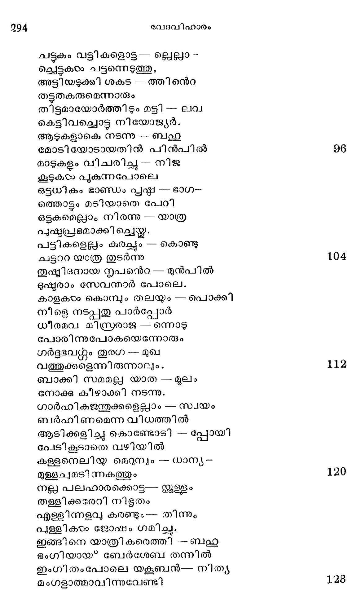
തുംഗബലികടം കഴിച്ചു--ഭക്ത--
പുംഗവന് പ്രാത്ഥന ചെയ്തു.
ആശ്രീതവത്സലനീശന്---സ്വയം
ഇസ്രയേല് വൃദ്ധന്നു മുന്നില്
ആവിര്ഭവിച്ചു പ്രസാദി---ച്ചേവ-൦
മാവിഷ*കരിച്ചു തന്നുള്ളം.
നിന് പിത്ൃവംശ പരേശ---നഹം
നിന് പരിപാലകന് തന്നെ
പോകുക മിസ്രയിം നാട്ടില്---ഞാനും
പോരുവന് നിന്നോടു കൂടി.
അങ്ങിനെയെങ്കില് നിനക്ക---൮ൃദി
മങ്ങലും ഭീതിയും വേണ്ടാ
നിന് മരണദശ തന്നില്---നിന്െറ
കണ്മണിയാകിയ യസ്പന്
നിന്നയനങ്ങളടന്ക്ാ---നിട
വന്നിടും സന്ദേഹമില്ല.
താവക സന്തതി ത്ത്ര--- സ്ഥിര--
വാസികളാമെന്നു ഹൃത്തില്
ലേശവും സംശയം വേണ്ട --പിതൃ-
ഭദേശമാമിക്കനാന് നാട്ടിൽ
സംഖ്യാധികരായി വീണ്ടും -- മമ
വന്കരശക്ത്യാ വരുത്തും.
എന്നീ വചനങ്ങഠം കേട്ട - ൮ൃദ്ധന്
നന്ദി മനസ്സതിങ്കല് വാച്ചു.
യാത്ര തുടരുകയെന്നു -- ഹൃദി
പ്രത്യാശയോടുമുറച്ച.
പനസ്ഥാവു കാണിപ്പാന് യൂദാ---സ്വയം
മുന്തി രഥത്തില് ചരിച്ച.
പിന്നാലെ യിസ്രയേല് സൈന്യം
സന്നാഹമോടും തിരിച്ചു.
അച്ഛനിരിക്കുന്ന ഗംഭീര --മാ -
മച്ഛരഥം വാജിയുശം
ഉഛ*റായ വേഗത്തിലാഞ്ഞു _-വലി -
ച്ുച്ലിചാമ്മട്ച പാഞ്ഞു.
ചാടിക്കുതിച്ചു ഹയങ്ങടം -- മുന്നോ
ട്ടോടുന്ന നേരത്തുതപ്പോല്
പാടേ മഹായ്യഥപാദാ - ഹതി
കൂടുക മൂലവും ഭൂമി
ചോടേ പൊടിഞ്ഞതില്നിന്നു -- പൊടി
കേടെന്നി മേലോട്ടയര്ന്നു
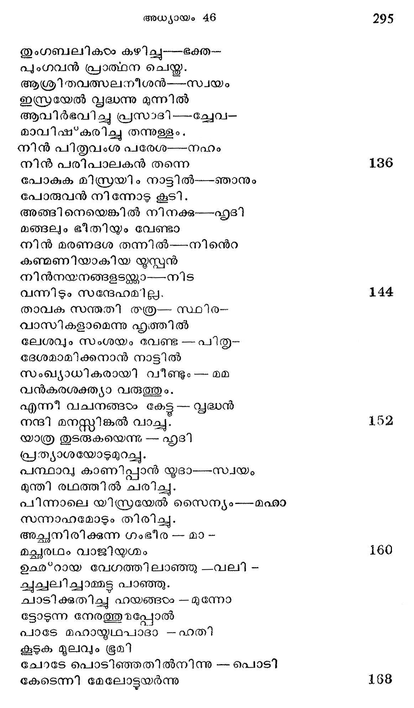
ധൂളിപടലം പടര്ന്നു--- വാനില്
കാളാംബുദമെന്നപോലെ
മിത്രഭഗവാനെ മൂടി---തീതെ
കരത്ര സമാനം വിലസി
രാജപ്രഭാവിയാം വൃഭദ്ധന്---തനന്െറ
തേജസ്സകണ്ടതു മൂലം
രേണു പടാവ്ൃതനായി--സൂര്യന്
നാണിച്ചുനിന്നുപോയേവം 176
ഓരോ ദിശ കടക്കുന്ന----നേരം
പുരിലുള്ളാളകരം ചേര്ന്നു
സാരനാം യാക്കോബിനന്നു--- നമ-
സ്കാരം ചറഞ്ഞു പിരിഞ്ഞു.
ഉജ്വലമാകുമീ യാത്ര---തന്നി --
ലച്ഛമനസ്തനായുള്ള
യാക്കോബി നോടെൊത്തു പോവാന് --- തങ്ങയം-
ക്കാര്ക്കും കഴിയാത്ത മട്ടില് 184
സ്ഥാവരജീവികളായി--- സ്ൃഷ്ട-
മായ ഭുരീതം നിനച്ചു
ഉച്ചത്തില്നിന്നു കരഞ്ഞാര് ---മാര്ഗ്ഗ--
വൃക്ഷങ്ങരം പക്ഷിസ്വനത്താല്.
ഈവിധം പ്രയഡഗമനം -- തുട-
നോക ദിനം കഴിയുമ്പോടം
ശൂര്മരു ശൂന്യത നീക്കി ---സമു-
ദ്രോമ്മി പോലായിടത്തെത്തി. 1942
പിന്നെയും യാത്ര തുടര്ന്നു---നദി
തന്നുടെ തീരമണഞ്ഞു.
ദുര്ല്ലംഘി താജ്ഞനവന്നാ---ധുനി -
കുല്യയെക്കാടം ലഘുവായി
വേഗമതിനെത്തരിച്ച--൮ൃഭ്ധ-
യോഗിചപലം തിരിച്ചു.
നീലനദീമുഖംതന്നില്--യഗ-
കാലമായ വണ്ടലടിഞ്ഞു 200
പാരം കരവച്ചുയര്ന്നു-ബലഥ-൦
സാരമാ മുവ്വരയായി
ശോഭിക്കും ഡല്ററയീ ഭക്ത----സയധ--
സ*രൂപിക്കു സ്വാഗതം കൂറി.
അല്പഴിയൂുടെ തിരിച്ചു--നല്ല-
ചൊവ്വ പിടിച്ചു വിദേശ്യര്.
ഓരോ ച്വവട കഴിയ----ന്തോറ--
മാരമ്ൃയമായോരു ഭൂമി 208
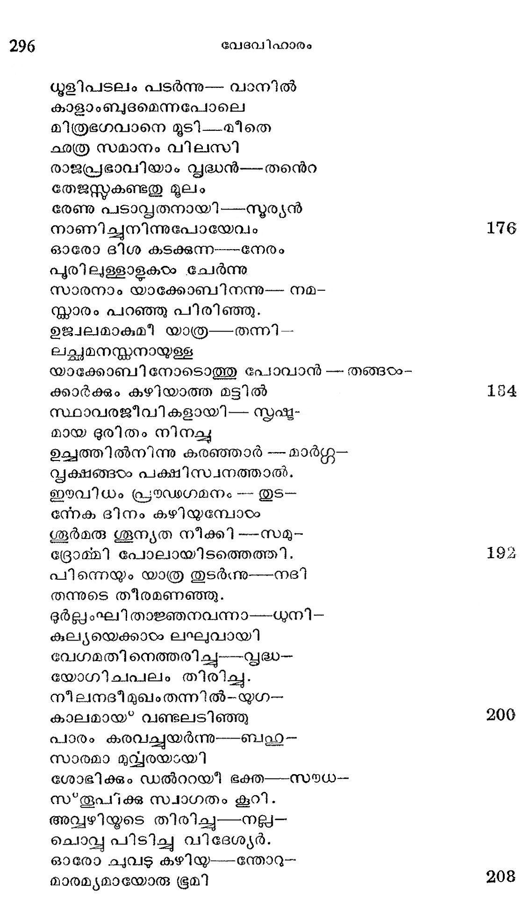
ചാരുതയേറിന മട്ടി ല്----കണ്ടു-
പാരം കുതൂഹലം പൂണ്ടാര്.
ചാമ വരകു്കടം ച്ോളം---ഘന--
ശ്യാമ മുഴുന്നുകടം കാണം.
ധൂമദലം യവജാതം--സുഗോ-
ധുമമിവകടം വിളയ്യം
കേദാരരത്നങ്ങടം കണ്ടു -- പാന്ഥര്
മോദാകുലന്മാരായ*ത്തീര്ന്നു.
പാരിജാതത്തോട്ത്തു -- കൊടും --
പോരു നടത്തുവതിന്നായ*
ഭര്മ്മഫലത്തിന് ഭരങ്ങഠം
ചംബരത്തേക്ക കുതിച്ചു
ഗംഭീരഭാവത്തില്നിന്നു --ഗുണ-
ജംഭികളീന്യല് മരങ്ങഠം.
മര്ട്ദനമേററും മധുര---രസം-
സദ്യോ കൊടുക്കുവാനായി)
ഉദ്യോഗമാര്ന്നു വിളങ്ങു-- -ന്നവി -
ടഭൂദ്യല്പ്രഭമിക്ഷ്യ വര്ഗ്ഗം
എന്തിന്നധികമുരയ്ക്ക- ്നവി--
ടന്തരംഗം കുളര്പ്പിക്കും
സന്തോഷ കാഴ്ചകളള്ള -- തോതാ-
നെന്തൂലികയ്ക്കില്ല ശക്തി
സവ്വസസ്യാഡ്യമാമി ബ*ഭൂ----തലം--
നിര്വ്വതിനല്കുകമൂലം
ഏദന് ശരിപ്പുകര്പ്പെന്നു-- പാസ്ഥര്--
ജാതകുതകം വദിച്ചു.
ഉയഷരഭ്ൂമികഠം മാത്രം ----കണ്ടു--
ശോഷിച്ചിരുന്ന തന്നേത്രം
ഭേഷാകമിക്കാഴമൂലം---പരി-൦
പോഷം ലഭിച്ചമുട്ടായി.
പിന്നെക്കുറെവഴി ചെല്ലം--പോതു-
മന്നില് പ്രസിദ്ധി വളര്ത്തി
മിസ്രയര്ക്കാരാദ്ധ്യദേവി----യായി-
വിശ്വൈക പാവനിയായി
നീലനദിയൊഴുകുന്ന---കാഴ്--
യാലോലമാക്കി ഹൃദന്തം.
കണ്ണിന്നളുതമായ* മിന്നി --കവി-
വര്ണ്ണനാവൈഭവം താക്സി
അന്തരാത്മാവിങ്കലെന്തോ -- ഒരു-
ചിന്താതിഗസുഖം നല്കും.
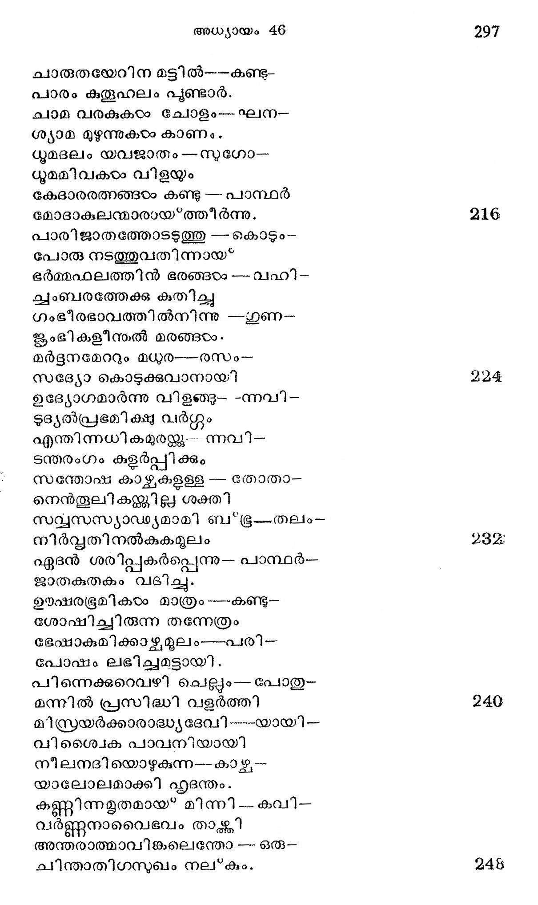
തീരങ്ങളാം പച്ചവിലുി---നുകരം--
ക്കാരമ്യ കാന്തി ദമായി
തുള്ളിത്തിളങ്ങുന്നു നീലാ --പഗ--
വെള്ളിക്കസവെന്നപോലെ.
ഗംഭീരമാനസന്മാരാ---യൊരു
വന്പര്ക്കു ഹൃത്തിലിളക്കം
ഉണ്ടാകയില്ലെന്നു ശാന്ത ---ഗതി
കൊണ്ടറിയിക്കു മിസ്റ്റീസു
ഇന്നദി മയലി തന് ദാതൃ---ഗുണം
ചൊന്നു തീര്പ്പോനാരു പാരില് ?
എഴുനൂറന്പതു ദൈര്ഘ്യം --മയി
ലേഴമീ മിസ്രയീംദേശം
നല്കിയത് മഹാഗംഭി - രയെ
ന്നുളെളാരു സത്യം പ്രസിദ്ധം
സംഖ്യാവി ഹീനമാം വര്ഷം---കൊണ്ടു
തന് കരമാര്ജ്ജിച്ച ഭൂമി
പങ്കവച്ചേകിന ദാത്രി--യത് ല്
തജഃവോര്ക്കാരാധ്യയല്ലോ
ഗംഭീരയാമി സ്രവന്തിക്കുള്ളില്
കഃംഭീരമുണ്ടെങ്കില് നമ്മഠം
വേമ്പേണ്ട വന്പാരിലിന്പം--- തരും--
ശുംഭല് ഗുണമാണു മൃഗ്യം.
വെണ്മ തിരണ്ടുള്ളപാകഠം-- കെട്ടി --
സ്റ്റമ്മോഹനാകൃതി പൂണ്ട
ഓടങ്ങളിന്നടി മീതില് --പറ--
ന്നീടുന്നു പക്ഷികഠം പോലെ.
പൊങ്ങുതടി മേലിരുന്നും൦---ചി ലര്--
ചവഞ്ടാടമേറിത്തുഴഞ്ഞും
ഇന്നദി താണ്ടുവാന് നോക്ക ന്നിതാ-
കമ്മഠര് മുക്തിക്കുപോലെ.
നക്രങ്ങളമ്പോ കരയില്----ക്കേറി --
തക്കവും പാര്ത്തുകിടന്നു
വെക്കം നദിയില് നിന്നേറാ---നിട്ട -
നല്ക്കരിങ്കല്ടപോലെ.
ഓലകാം കെട്ടിക്കുതിക്കാ---നിട്ട-
ചാലേ വലിച്ചു കരയില്
കോറിയ മട്ടില് കിടപ്പൂ -കര-
ജഇാററിലേ ചീങജ്ജണിവര്ഗ്ഗം.
ചാരുവാമ$ നദീതീര----ത്തിന്നു--
ചാരേ നെടുംകോട്ടപോലെ.
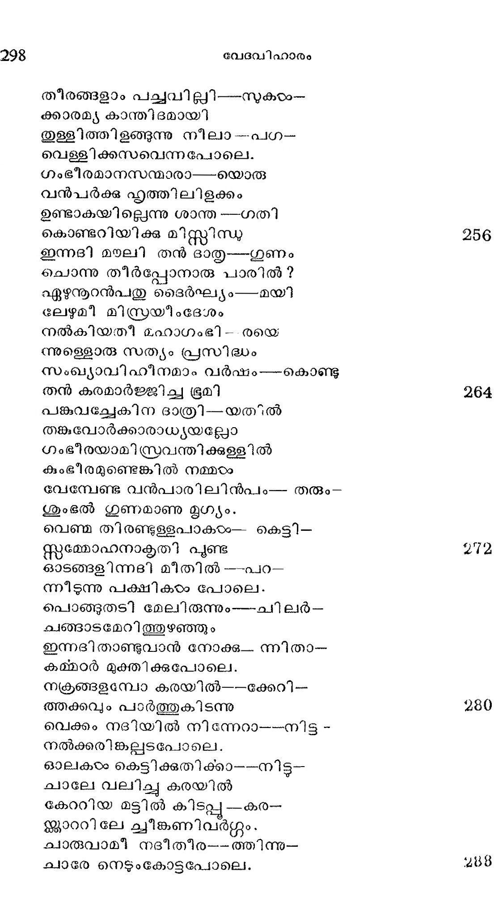
വീരശിരശ*ശൃംഗംപൊക്കി---ക്കൊണ്ടു
ഘോരമാം പവ്യതപംക്തി
ക്രരമരുവില്നിന്നമ്പോ---കാത്തു-
പോരുന്നു മിസ്രാവനിയേ.
സുസ്കടികാഭമാം സിന്ധു---ജലം--
യസ്റ്റിരത്സംപോല് ജ്വലിച്ചും
പച്ചപ്പുല് മാലികളെല്ലാം---ക്ഷണം--
പച്ചക്കല്ലിന് പ്രഭയാര്ന്നും
പവ്വതശൃംഗങ്ങടം പാടെ -__-പാരം
സ്വര്ണ്ണനുവർണ്ണം കലര്ന്നും
സൂര്യാഭയേശുന്ന നേരം _-ബഛ
സൂര്യാദരമാര്ന്നീ ദേശം.
ഈവിധമായവര് തെക്കോ.._ട്ടമി --
തായതമായൊരു യാത്ര
ചെയ്ത വിരമിച്ചു ഗോഷന്---ദേശ--
ത്തെയ്യിനാരുളിഷ്ടനാട്ടില്.
അസ്ഥലത്തിന്ഭംഗി ചൊല്ലി---ക്ക, ത-
കൃത്യരായോരില്ല പാരില്.
അത്ര്ക്കുഗോചരമത്രെ---വാക്കി ---
ന൬ഭ്ധരണീ ഗൂണപുൂരം
കുല്യവഴിയൊഴുകീടും
വെള്ളമിയററുമിരെപ്പം
കാട്ടുചെടിപ്പടര്പ്പിങ്കല്---ത്ധില്ലി-
കൂട്ടും പല്ഷസ്വരവും
ഈന്തല് മരത്തിന്നിലകഠം---വഴി --
പൊത്തു മനിലസ്വനവും
വിശ്രമമെന്നിയെ വൃക്ഷ---നിര-
ന്ൂഛ*റിതഭൂഷകളായി
ശോഭിക്കും മൈനാ കുയിലെ---ന്നിവ-
ഘോഷിക്കും ശ്രാവ്യധ്വനവും
എന്നു വേണ്ടെല്ലാരവവു൦--ഗോഷന് ൦
മാന്ൃയതവേഭനംചെയ്ത.
യോസേഫ് യാഭക്കാബിനെ വന്നു കാണ്ടുന്നതു*
സാധനമെല്ുാമിറക്കി---യവര്
വാസാര്ഹാമാമാ സ്ഥലത്തു
നിള്ലവേ, യോസേഫു തന്െറ---പിതൃ-
വക്ര്രസന്ദര്ശനത്തിന്നായ*.
വന്നിതു സ്വരണ്ണരഥത്തി---ലൊരു
മിന്നല്ക്കൊടി പാഞ്ഞമട്ടില്.
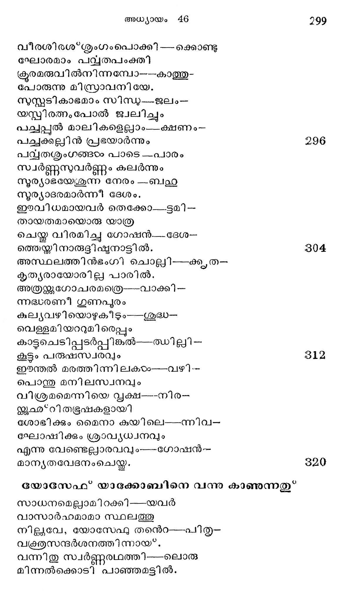
തമ്മില്പ്പിരിഞ്ഞു ബഹുലം---നാളാ--
യെന്നിരുന്നാല മത്താതന്.
തന്നരുമസുതന് തനന്െറ----മുഖ--
മന്നിമിഷത്തിലറിഞ്ഞു.
ഓടിവന്നായവന് വീണു----സ്റേഹ --
ചുടെഴും താതനന്െറ കൈയില്.
ഗാഡം പിതാവുമവനെ----യണ--
ചുഡസമ്മോടദം പുണര്ന്നു.
കണ്ണുനീര് ധാരയൊഴുക്കി---യവ-൦
രന്യോന്യ മാര്ദ്രീകരിച്ചു.
വന്വിയോഗാമയശാന്തി----ക്കുള്ള-
വന്മരുന്നായതു തീര്ന്നു.
യാക്കോബുരച്ചെന്െറ നേത്ര---ത്തിന്നു.
പാല്ക്കുഴമ്പായൊരു പുത്രാ!
നീ മരിച്ചെന്നു ഞാന് കേട്ട---നേരം
മാമകമായ മനസ്സില്
ഉണ്ടായ യാതനയോതാ ---നെനി -
ക്കൂണ്ടാകയില്ലൊരു ശക്തി
ഞാനും മൃതപ്രായനെന്ന-- മട്ടി -
ലീനാടംവരെയുമിരുന്നു.
ഇന്നു നിന് പൊന് മുഖം കണ്ടു----മമ
ഖിന്നത യെല്ലാമറുന്നു.
വൃദ്ധനെന്നാലുമെന് മേദ-- സ്ിന്നു
സൃദ്ധിപ്പെടാന് തുടങ്ങുന്നു
മങ്ങിയിരുന്നൊരെന് കണ്ണി -- ന്നൊളി--
തിങ്ങി വിളങ്ങുന്നു പാരം.
എന്മേനി വിട്ടന്നു പോയ-- പര
മോന്മേഷം വീണ്ടും വരുന്നു.
ചിത്തനിലയനം തന്നിൽ-- മോദം
നൃത്തമാടുന്നവിശങ്കം.
ഏതാണ്ടൊരു ബലമെനന്െറ---സിരാ-
വ്രാതത്തിലൂടെ ചരില്പൂ.
നിന്മുഖമാം പൂര്ണ്ണചന്ദ്രന്-- ഉദി -
ച്ചെന്നു കാണാമെന്നു ഹൃത്തില്
ചിന്തിച്ചു ചിന്തിച്ചിരുളി --ലകം
വെന്തിരുന്നുള്ളൊരീ വൃദ്ധന്
ഇല്ലാനിവ്വത്തി നിമിത്തം -മൃത്ൃ-
വീപ്പോളണകീലും ധന്യന്
യൂസ്പന് കുറയ നിമിഷം--- താത-
ബാപ്ാമൃതത്തില് കുളിച്ചു.
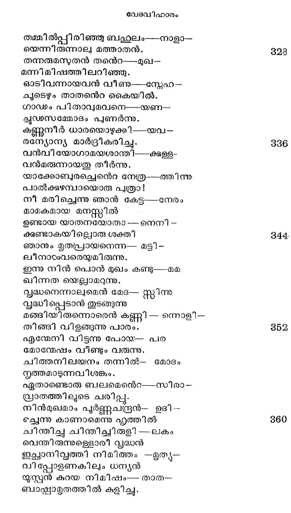
സ്വന്ത ശരീരമാം ദീപ്മി -- ചിന്തും
പന്തം കൊളത്തിയെടുത്ത
ബന്ധുരവര്ത്തിയാം താത --൯ുടെ
ചന്തമാം ദേഹമണഞ്ഞു.
രത്നഖനിയോടഭ വീണ്ടും --- ചേര്ന്നു
രത്ത്തിനുള്ള ദൃതിയെ
ഏതാന് ക്ഷണം വഹിച്ചമ്പോ-- നിന്നു
ചോതോഹരമാം വിധത്തില്.
പിന്നെയാ സൃദ്ധന്െറ കൈക ---ളാകും
കന്നല് ദളങ്ങളകന്നു
യൂസ്്ശരീരമാം പൊന്കേ --- സര-
പുഷ്ണവരാടം വിളങ്ങി
ആയവന് ചൊന്നു ജനക --- നൊടും൦--
സ്വീയസഹോദരരോടും:
ഞാനിതാ പോകുന്നു മിസ്ര-- പുരി -
ഇ്ലാനന്ദതുന്ദിലനായി.
രാജഗ്ൃഹത്തില് കടന്നു --- മഹാ-
രാജനോടിീവ്ൃത്തമെല്ലാം.
ഞാനറിയിച്ചി ടുമ്പോതു
നാനയിക്കും ഭവാന്മാരെ
താവകശയ്യത്തി വിനവ --മ്പോതു-
കേവലം ഞങ്ങളിടയര്
എന്നുരച്ചീടുചിനപ്പോഴം -- രാജ-
സന്നിധി വിട്ടകലത്തില്.
സ്വാതന്ത്ര ദായമായ്* ഗോഷന് --- ദേശ-
ആാതങ്കമെന്റെ വസിക്കാം.
മററിടമെല്ലാം പ്രജകഠം--നിജ--
കൊററു കഴിവതിന്നായി
വിററുപോം ഭൂപതിക്കെന്ന----വാത്ത-
ചെൊറു രഹസ്യമെന്നാലും
തൊററില്ലതു ഭവിച്ചീടും -- അപ്പോം -
മററുള്ള മിസ്രരയര്പോലെ
തെറെറന്നരചന് കൊഴുവ -- രായി -
ട്ടോറു നിലം കൃഷി ചെയ്ത
അഞ്ചിലൊന്നത്വേശ്വരന്നു --ഭോഗ -
മഞ്ചാതെ നല്കേണ്ടതാകും.
ഈ വിപത്തേശാതിരിപ്പാന് -- നിങ്ങടം--
ഗോപാലരെന്നു കഥിപ്പിന്.
അങ്ങിനെയെങ്കി ലകലെ---വാങ്ങി--
ആംഗമോദം വസിച്ചീടാം.
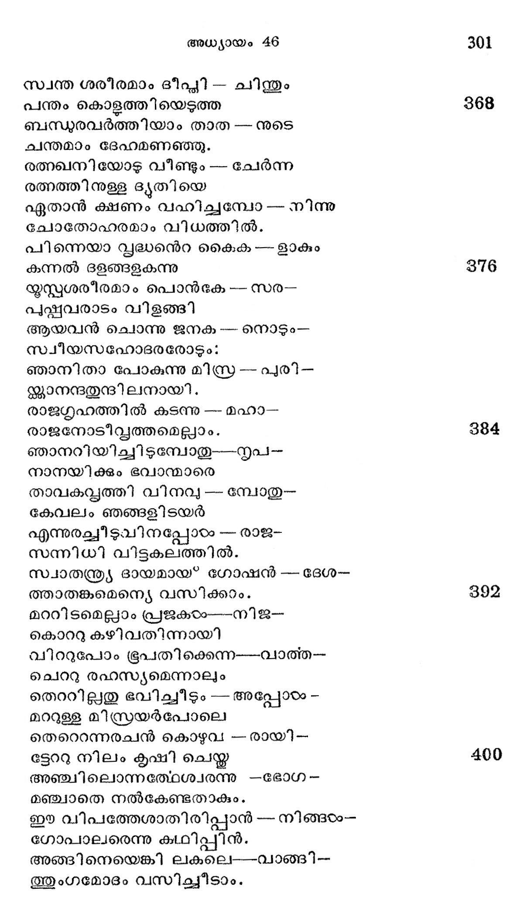
ഗോപാലരെന്നുളള ജാതി--പണ്ടി --
ബ*ഭൂപാടനയ ചെയ*കമൂലം
ആബാലവ്വദ്ധ മെല്ലാര്ക്ക--. മവര്--
ശാപാകരങ്ങളായ*' നിലപ.
ആയവരെ ത്തൊടാറില്ല ---അവ-
ക്കാവാസ മേകില്ല പൂരില്.
തന്നിമിത്തം നിങ്ങഠം ഗോപാ -- ലരെ -
ന്നിന്്യപനോട പറഞ്ഞാല്
ഒന്നുമൊരു തടവെന്നെ --നിങ്ങരം -
ക്കന്നില മാവാസമാകും.
സാധിഷ്ട മാകുമീവാക്ക --- കേട്ട
നേടിഷ്ടരാം ഭ്രാതൃപ്പന്ദം
ആകട്ടെ യെന്നുട നോതി---യസ്്പന്
സാറട്ടി ലേറി മടങ്ങി.
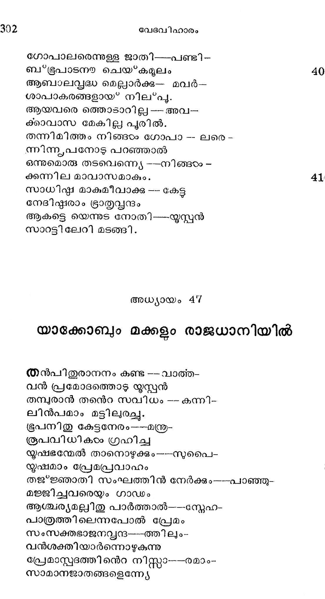